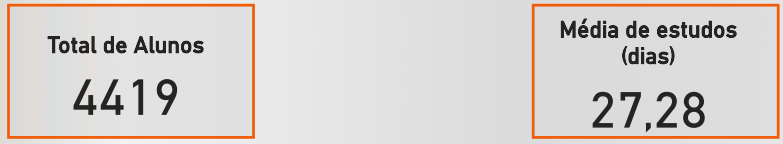
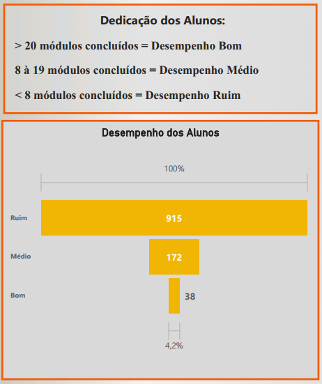

Projeto: Dashboard Piracanjuba - Análise de Engajamento e Desenvolvimento de Alunos
Introdução
Este é um projeto real, e consiste na criação de um dashboard desenvolvido para a Piracanjuba, com o objetivo principal de avaliar o engajamento e o desenvolvimento dos colaboradores que estão participando de um curso de tecnólogo. A empresa adquiriu o curso para seus funcionários e demandou uma ferramenta analítica para monitorar o progresso, identificar áreas de sucesso e oportunidades de melhoria no processo de capacitação. O painel proporciona uma visão clara sobre o número de alunos, o tempo médio de estudo, o avanço na conclusão de módulos e a emissão de certificados, permitindo à Piracanjuba tomar decisões baseadas em dados para otimizar seus programas de desenvolvimento interno.
Obs: Todos os funcionários (alunos) foram anonimizados no dataset.
Estrutura do Projeto
A análise foi dividida em quatro páginas principais no dashboard, cada uma focando em diferentes aspectos do engajamento e desenvolvimento dos alunos:
- Visão Geral: Apresenta os indicadores totais de alunos e a média de dias de estudo.
- Análise Geral dos Alunos: Detalha a conclusão de módulos individuais, o fluxo de novos alunos por mês e o volume de conclusão de módulos mensal.
- Análise da Performance dos Alunos - Certificados: Foca nos certificados emitidos, mostrando o total geral, a emissão por aluno e por conteúdo.
- Avaliação dos Módulos: Oferece uma visão do desempenho geral dos módulos (concluídos, pendentes, em progresso) e uma classificação do desempenho dos alunos com base no número de módulos concluídos.
Tecnologias Utilizadas
Para a construção deste dashboard analítico, as ferramentas empregadas foram:
- Power BI Desktop: Para conectar as fontes de dados, realizar a modelagem e transformação necessárias, e desenvolver os visuais interativos que compõem o dashboard. Foram utilizadas medidas DAX para cálculos e a linguagem M para o tratamento de dados no Power Query.
- Figma: A prototipação e o design do dashboard foram feitos com o Figma, garantindo uma experiência de usuário intuitiva e visualmente atraente, que posteriormente foi exportada e integrada ao Power BI.
Processo de ETL (Extração, Transformação e Carregamento)
O processo de ETL para esse projeto foi estruturado para garantir a acuracidade e a prontidão dos dados para análise:
- Extração: Os dados brutos foram extraídos de planilhas Excel, contendo informações detalhadas sobre os alunos, seu progresso nos módulos e os certificados emitidos. Essas planilhas serviram como a fonte primária de dados para a análise.
- Transformação: No Power Query, parte integrante do Power BI, foram realizadas diversas operações de limpeza e enriquecimento. Isso incluiu:
- Tratamento de dados, garantindo consistência e qualidade.
- Criação de novas colunas e métricas calculadas que seriam essenciais para as análises, utilizando a linguagem M.
- A modelagem de dados foi cuidadosamente definida, estabelecendo relacionamentos entre as tabelas e criando um esquema que permitisse a correta agregação e filtragem das informações.
- Carregamento: Após as etapas de extração e transformação, os dados foram carregados no modelo de dados do Power BI, estando prontos para alimentar todos os gráficos e tabelas do dashboard, permitindo a exploração interativa.
Dashboard
O dashboard é organizado em quatro páginas distintas, cada uma dedicada a um aspecto específico da análise. O design, concebido no Figma e implementado no Power BI, garante uma interface limpa, com visuais claros e de fácil interpretação. A interatividade permite que os usuários naveguem entre as páginas e explorem os dados em diferentes níveis de granularidade, desde a visão geral do engajamento até o desempenho individual dos módulos e alunos.

Insights
A análise dos dados apresentados no dashboard revelou insights cruciais sobre o engajamento e desenvolvimento dos alunos da Piracanjuba:
- Visão Geral do Engajamento:
- O painel revela um total de 4.419 alunos inscritos no curso.
- A média de dias de estudo é de 27,28 dias. Este é um indicador importante para medir o tempo que os alunos dedicam ao aprendizado, sugerindo um engajamento razoável com a plataforma ou conteúdo.

- Conclusão e Fluxo de Alunos por Módulo:
- O módulo de “Boas-vindas!” e “Desenvolvimento técnico” se destacam com 219 e 192 conclusões, respectivamente, indicando que são os pontos de entrada ou módulos de grande relevância e engajamento.
- Módulos fundamentais como “Módulo Inicial - Power BI” (135 conclusões), “Power BI II” (73 conclusões) e “Essencial de SQL” (70 conclusões) mostram uma boa taxa de finalização, o que é positivo para o desenvolvimento das competências técnicas.
- Em contrapartida, módulos mais avançados ou específicos, como “Live de Dúvidas” (16 conclusões) e “Pilar 4.3 Projeto Real” (17 conclusões), possuem um número significativamente menor de conclusões. Indicando uma dificuldade maior, menor interesse, ou que são módulos opcionais para um grupo menor de alunos.
- Fluxo de Entrada e Conclusão Mensal:
- A entrada de Novos Alunos** teve picos notáveis em Janeiro (1.088) e Setembro (779), com uma queda em Dezembro (644) e duas quedas signifcantes em Outubro e Novembro (265 e 64 respectivamente).

- A Conclusão de Módulos por Mês mostra um padrão diferente. Embora Setembro (183) e Outubro (215) tenham um alto volume de conclusões, Janeiro (12) e Dezembro (18) registram os menores números. Isso pode refletir um atraso entre a entrada de alunos e a conclusão dos módulos, ou que as conclusões se concentram em meses específicos do ano letivo.

- A entrada de Novos Alunos** teve picos notáveis em Janeiro (1.088) e Setembro (779), com uma queda em Dezembro (644) e duas quedas signifcantes em Outubro e Novembro (265 e 64 respectivamente).
- Análise de Certificados Emitidos:
- Um total de 751 Certificados Emitidos demonstra um resultado tangível do programa de capacitação.

- A distribuição de certificados por aluno revela que o aluno #4 se destaca com 6 certificados.

- Em relação à Emissão de Certificados por Conteúdo**, “Power BI 1.0” (197 certificados) e “Excel” (168 certificados) são os conteúdos com maior número de certificações, sublinhando a demanda e a relevância dessas ferramentas. SQL (153 certificados) também possui um bom desempenho. Conteúdos como “Pentaho” e “Boas-Vindas” têm um número muito baixo de certificados (1 cada), o que pode indicar que são módulos de nicho ou introdutórios sem foco em certificação.

- Um total de 751 Certificados Emitidos demonstra um resultado tangível do programa de capacitação.
- Desempenho Geral e por Aluno nos Módulos:
- Dos 26 módulos totais, a maioria dos alunos está “Em progresso” (79,35%). Apenas 7,61% dos alunos “Concluíram” todos os módulos, e 13,04% estão com módulos “Pendente”. Isso ressalta a importância de estratégias para incentivar a conclusão e o acompanhamento dos alunos em progresso.

- A classificação de “Dedicação dos Alunos” categoriza o desempenho: “Bom” (> 20 módulos concluídos), “Médio” (8 a 19 módulos concluídos) e “Ruim” (< 8 módulos concluídos).
- O painel “Desempenho dos Alunos” mostra que a maior parte está em “Em progresso”.

- Dos 26 módulos totais, a maioria dos alunos está “Em progresso” (79,35%). Apenas 7,61% dos alunos “Concluíram” todos os módulos, e 13,04% estão com módulos “Pendente”. Isso ressalta a importância de estratégias para incentivar a conclusão e o acompanhamento dos alunos em progresso.
- Também é possivel visualizar uma performance individual, essa capacidade de identificar o desempenho individualizado permite intervenções direcionadas, como suporte personalizado para alunos com desempenho “Ruim” ou reconhecimento para os “Bons”.
Considerações
O dashboard oferece uma base sólida para aprimorar as estratégias de educação corporativa na Piracanjuba. A partir dos insights obtidos, algumas considerações importantes surgem:
- Incentivo à Conclusão: Com uma grande parcela de alunos “Em progresso”, é fundamental desenvolver estratégias para converter esse progresso em conclusão. Isso pode incluir campanhas de incentivo, lembretes automatizados, sessões de tutoria ou a gamificação para manter os alunos engajados até o final.
- Acompanhamento de Módulos Específicos: A baixa conclusão de módulos mais avançados ou específicos sugere a necessidade de avaliar a dificuldade do conteúdo, a demanda por esses tópicos ou a necessidade de mais suporte para os alunos que os iniciam.
- Otimização do Fluxo Mensal: A disparidade entre a entrada de novos alunos e a conclusão de módulos por mês aponta para a necessidade de entender os ciclos de estudo dos colaboradores. Pode-se planejar a oferta de módulos de acordo com os períodos de maior engajamento ou criar programas de aceleração para a conclusão.
- Exploração de Certificações: O alto número de certificados em Power BI e Excel valida a relevância desses temas. A empresa pode explorar a criação de novos módulos ou aprofundamentos nesses temas para atender à demanda. Para os temas com pouca certificação, uma revisão do conteúdo ou da forma de apresentação pode ser necessária.
- Gestão Individualizada do Desempenho: A capacidade de classificar o desempenho dos alunos (“Bom”, “Médio”, “Ruim”) é um diferencial. A Piracanjuba pode usar essa informação para oferecer mentorias aos alunos com desempenho “Ruim”, celebrar os “Bons” e talvez incentivá-los a se tornarem “mentores” para os colegas, e fornecer feedback construtivo aos alunos “Médios”.
Conclusão
O Dashboard foi uma ferramenta analítica estratégica que transformou os dados de engajamento e desenvolvimento dos colaboradores em inteligência acionável. Sua principal contribuição residiu na capacidade de:
- Fornecer uma visão clara e abrangente do progresso educacional da força de trabalho.
- Identificar padrões de engajamento, gargalos na conclusão de módulos e áreas de alta performance.
- Permitir uma gestão proativa do programa de capacitação, desde o planejamento da oferta de cursos até o suporte individualizado aos alunos.